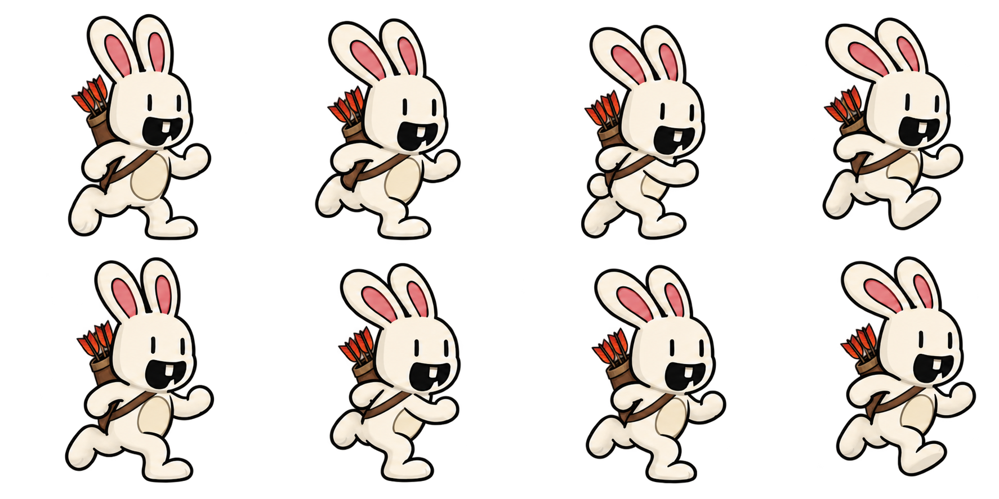
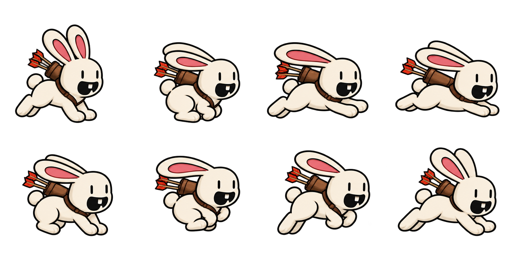

Artwork draft · preview before integration
A quiver for both running styles
The arrows sit inside a leather quiver on the bunny’s back, held by a shoulder strap. Compare upright running on two paws with bounding on all four. This is a separate artwork preview; these quiver animations have not been added to the game.
Alternating steps and arm swings. Quiver behind the shoulder.
Gather, stretch and land. Quiver follows the back through each bound.
Loading both animation drafts…
Inspect all eight poses in each draft

